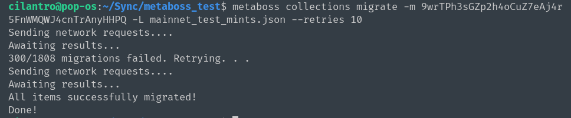

Metaboss


The Solana Metaplex NFT 'Swiss Army Knife' tool.
Current Commands:
SUBCOMMANDS:
burn Full Burn a NFT
burn-print Full Burn a print edition NFT
collections NFT collections commands
create Create accounts
decode Decode on-chain data into JSON format
derive Derive PDAs for various account types
find Find things
help Prints this message or the help of the given subcommand(s)
mint Mint new NFTs from JSON files
parse-errors Parse Errors commands
set Set non-Data struct values for a NFT
sign Sign metadata for an unverified creator
snapshot Get snapshots of various blockchain states
transfer Transfer Metaplex assets
update Update various aspects of NFTs
uses NFT uses commands
Each subcommand has additional commands. Run metaboss <subcommand> --help and metaboss <subcommand> <command> --help for more information on particular commands.
Suggestions and PRs welcome!
Note: This is experimental software for a young ecosystem. Use at your own risk. The author is not responsible for misuse of the software or failing to test specific commands before using on production NFTs.
Test on devnet or localnet before using on mainnet.
Quick Start
Install Binary
Copy the following to a terminal:
bash <(curl -sSf https://raw.githubusercontent.com/samuelvanderwaal/metaboss/main/scripts/install.sh)
If you get errors you may need dependencies:
Ubuntu:
sudo apt install libssl-dev libudev-dev pkg-config
MacOS may need openssl:
brew install openssl@3
Or get the binary yourself: binary.
Install With Cargo
So you're a Rust dev. . .
cargo install metaboss
See Usage Commands
metaboss -h
Decode a mint account's metadata:
metaboss decode mint -a 23gaZq8578xHozMWADsmZ2hAFqZ15iyHmQtRw14meds2
Get a snapshot of mint accounts by first verified creator:
metaboss snapshot mint -c PanbgtcTiZ2PveV96t2FHSffiLHXXjMuhvoabUUKKm8
Installation
Recommended Way to Install
The recommended way to install is to use the install script to install on MacOs, Ubuntu, or other Unix-like OS, by copying the following into a terminal:
bash <(curl -sSf https://raw.githubusercontent.com/samuelvanderwaal/metaboss/main/scripts/install.sh)
This will download the appropriate binary for your system and install it. Feel free to inspect the install script directly at the link to see what you are running before you run the command.
For Windows, either use the prebuilt binary in the following section, or install Windows Subsystem Linux (WSL) to use the Ubuntu terminal to run the above installation script.
To install WSL on Windows, either run wsl --install -d ubuntu in the cmd prompt terminal, or install "Ubuntu" from the Windows app store. Once you have that set up you can simply run the install script in the WSL terminal. You will then run all your Metaboss commands from WSL as well.
The Metaboss Discord has a step-by-step guide for installing on Windows in the #windows-install channel.
Binaries
Linux, MacOS and Windows binaries available in releases, thanks to CI work done by Kartik Soneji.
Crates.io
cargo install metaboss
Install From Source
Install Rust.
curl --proto '=https' --tlsv1.2 -sSf https://sh.rustup.rs | sh
Clone the source:
git clone git@github.com:samuelvanderwaal/metaboss.git
or
git clone https://github.com/samuelvanderwaal/metaboss.git
On Ubuntu you may need some additional packages:
sudo apt install libssl-dev libudev-dev pkg-config
Change directory and check out the main branch:
cd metaboss
git checkout main
Install or build with Rust:
cargo install --path ./
or
cargo build --release
Set Up Your Solana Config
If you have the Solana CLI installed (recommended) you can setup your RPC and keypair so you don't have to pass them into Metaboss:
solana config set --url <rpc url> --keypair <path to keypair file>
Examples
Update the URI of an existing NFT
metaboss update uri -k ~/.config/solana/devnet.json -a CQNKXw1rw2eWwi812Exk4cKUjKuomZ2156STGRyXd2Mp -u https://arweave.net/N36gZYJ6PEH8OE11i0MppIbPG4VXKV4iuQw1zaq3rls
Mint a new NFT
Prepare a JSON file.
{
"name": "TestNFT2",
"symbol": "TNFT",
"uri": "https://arweave.net/FPGAv1XnyZidnqquOdEbSY6_ES735ckcDTdaAtI7GFw",
"seller_fee_basis_points": 200,
"creators": [
{
"address": "AVdBTNhDqYgXGaaVkqiaUJ1Yqa61hMiFFaVRtqwzs5GZ",
"verified": false,
"share": 50
},
{
"address": "42NevAWA6A8m9prDvZRUYReQmhNC3NtSZQNFUppPJDRB",
"verified": false,
"share": 50
}
]
}
Call command. In this case we do not set --receiver so we mint directly to the keypair address.
metaboss mint one -k ~/.config/solana/devnet.json -d ./new_nft.json
Snapshot Candy Machine Mint Accounts
We call the command with no output specified so it creates the file in the current directory.
metaboss snapshot mints -c BHZWQEtGRMs7voC7vDyVQCXawB1P6UvxG899ATGwxmaR
The file BHZWQEtGRMs7voC7vDyVQCXawB1P6UvxG899ATGwxmaR_mint_accounts.json is created with the contents:
[
"D5ycm2mgBWDR37QVkvM389x84V4ux48bSeHLeiHPtX28",
"4kYdMRRYtXjmkusgKEBntSXLDhqkHNE57GF3RPdtx6MW",
"J8xuCFCeBRESoXewtMwrrpVUGikUG3B1WznNdLffyymz",
"4gRtRjrbD7g5ZKUvSVA1tYMK9LZqz6uWuSc3rKeinySh"
]
Update List of NFT Metadata
- Get your NFT mint list using
metaboss snapshotor another tool. - Decode all the metadata into files using
metaboss decode mint -L <NFT_MINT_LIST_FILE> --full -o <DATA_FILES_DIR>. - Update the specific data you want changed in each file in the
<DATA_FILES_DIR>. - Update the NFTs with
metaboss update data-all -d <DATA_FILES_DIR>.
Note: many fields have specific update <field>-all commands which are easier to use as they don't require updating a bunch of metadata files manually. Check the update and set sections first to see if they have what you need.
Global Options
These are the options that apply to all subcommands and can be passed in at any level.
metaboss <option> <subcommand> <subcommand>
metaboss <subcommand> <option> <subcommand>
metaboss <subcommand> <subcommand> <option>
Options
-r, --rpc
Metaboss will try to read your Solana config settings for both the RPC endpoint and also the Commitment setting by reading from $HOME/.config/solana/cli/config.yml. If it can't find a config file it defaults to using https://dev.genesysgo.net and confirmed.
Running Metaboss with the --rpc option will override the above with whatever RPC endpoint the user provides.
-T, --timeout
This defaults to 90 seconds which should be fine for most cases but can be overridden if needed.
Example:
metaboss snapshot holders -r https://ssc-dao.genesysgo.net/ -T 120 -u DC2mkgwhy56w3viNtHDjJQmc7SGu2QX785bS4aexojwX
Burn
Burn Master Editions NFTs, as long as they do not have any editions (supply == 0). Only the owner/token holder of the NFT can burn it.
Burn One
Fully burn a single NFT by calling the Token Metadata program burn_nft handler.
Usage
metaboss burn one -k <OWNER_KEYPAIR> --account <MINT_ACCOUNT>
Burn All
Fully burn multiple NFTs by providing a JSON list file of mint accounts.
E.g. JSON file:
[
"D5ycm2mgBWDR37QVkvM389x84V4ux48bSeHLeiHPtX28",
"4kYdMRRYtXjmkusgKEBntSXLDhqkHNE57GF3RPdtx6MW",
"J8xuCFCeBRESoXewtMwrrpVUGikUG3B1WznNdLffyymz",
"4gRtRjrbD7g5ZKUvSVA1tYMK9LZqz6uWuSc3rKeinySh"
]
Usage
metaboss burn all -k <OWNER_KEYPAIR> -L <JSON_LIST_OF_MINTS_ACCOUNTS>
As in all other commands, keypair can be elided if set in the Solana config file.
Burn-Print
Burn Print Edition NFTs. Only the owner/token holder of the NFT can burn it.
Burn-Print One
Fully burn a single Print Edition NFT by called the Token Metadata burn_edition_nft handler.
Usage
metaboss burn-print one -k <OWNER_KEYPAIR> --account <MINT_ACCOUNT>
Burn-Print All
Fully burn multiple Print Edition NFTs by providing a JSON list file of mint accounts.
E.g. JSON file:
[
"D5ycm2mgBWDR37QVkvM389x84V4ux48bSeHLeiHPtX28",
"4kYdMRRYtXjmkusgKEBntSXLDhqkHNE57GF3RPdtx6MW",
"J8xuCFCeBRESoXewtMwrrpVUGikUG3B1WznNdLffyymz",
"4gRtRjrbD7g5ZKUvSVA1tYMK9LZqz6uWuSc3rKeinySh"
]
Due to on-chain limitations, you also have to provide the mint account of the Master Edition NFT.
Usage
metaboss burn-print all -k <OWNER_KEYPAIR> -L <JSON_LIST_OF_MINT_ACCOUNTS> -m <MASTER_EDITION_MINT_ACCOUNT>
As in all other commands, keypair can be elided if set in the Solana config file.
Collections
Migrate
Migrate a collection of NFTs or pNFTs to be part of a single on-chain Metaplex Certified Collection (MCC).
-
Create your Collection Parent NFT using a minting tool such as Sol Tools. Alternately, use
metaboss mint oneormetaboss mint asset. This NFT will have your collection name, cover art, description, traits etc. It's the parent NFT for you collection and all items in your collection will point to this mint account. -
Get your mint list. If your collection is a single candy machine you can use the
--candy-machine-idoption, otherwise provide the path to your mint list formatted as a JSON file with the--mint-listoption.
Example contents of the mint list file:
[
"D5ycm2mgBWDR37QVkvM389x84V4ux48bSeHLeiHPtX28",
"4kYdMRRYtXjmkusgKEBntSXLDhqkHNE57GF3RPdtx6MW",
"J8xuCFCeBRESoXewtMwrrpVUGikUG3B1WznNdLffyymz",
"4gRtRjrbD7g5ZKUvSVA1tYMK9LZqz6uWuSc3rKeinySh"
]
Your Collection Parent NFT must have the same update authority as the items you will put in the collection. If you don't want to connect your update authority keypair to a website, you can mint with a different keypair and then change the update authority with Metaboss, or mint with Metaboss's mint one command.
Running the Commands
Single Candy Machine Collection
Let's say you've created a parent NFT for your collection with a mint address of 9wtpdjMysSphxipTSJi7pYWGzSZFm2PRFtQucJiiXUzq and you have a candy machine id of 8yuhovH7fb63ed7Q3rcxL3kYZDhps4qspjaxx1N8WSni and your update authority is in the file my_keypair.json in the same directory you are running the command. Your Metaboss command would be:
metaboss collections migrate -k my_keypair.json -c 8yuhovH7fb63ed7Q3rcxL3kYZDhps4qspjaxx1N8WSni --mint-address 9wtpdjMysSphxipTSJi7pYWGzSZFm2PRFtQucJiiXUzq
Using a Mint List File
Assume the same scenario above but with a mint list file named "my_mint_list.json" in the same directory you are running the command. Your Metaboss command would be:
metaboss collections migrate -k my_keypair.json -L my_mint_list.json --mint-address 9wtpdjMysSphxipTSJi7pYWGzSZFm2PRFtQucJiiXUzq
This assumes you have your RPC set in your Solana config, otherwise it can be passed in with the -r option. As with all Metaboss commands, if you've set your keypair in your Solana config, you can omit the -k option. I recommend setting both in the Solana config to simplify commands:
solana config set --url <rpc url> --keypair <path to keypair file>
Retry Flow and Cache File
The migrate command rapidly fires off a lot of network requests to try to migrate over your collection as quickly as possible. If some of them fail, it keeps track of them and will automatically retry them based on the maximum number of retries you specify with the --retries option. (Defaults to one retry.)

If it hits the maximum number of retries with errors remaining, it will write them to the cache file (metaboss-cache-migrate-collections.json).
To retry from a cache file, you can use the --cache-file option.
metaboss collections migrate -k my_keypair.json --cache-file metaboss-cache-migrate-collections.json --mint-address 9wtpdjMysSphxipTSJi7pYWGzSZFm2PRFtQucJiiXUzq
This will read the items from the cache file and retry them.
When retrying, if you consistently end up with the same number being retried each time it probably indicates those items cannot be migrated for some reason. Check the errors on the items that failed to migrate.
Example cache file:
{
"FqKGC9CCVThn857VAyZtZQq5L31njnbeUTe1JoCsCX8J": {
"error": "Migration failed with error: RPC response error -32002: Transaction simulation failed: Error processing Instruction 0: custom program error: 0x39 [5 log messages]"
},
"H7xrCZwA7oqsFeRcPsP6EEYHCxqq7atUBuuQAursXvWF": {
"error": "Migration failed with error: RPC response error -32002: Transaction simulation failed: Error processing Instruction 0: custom program error: 0x39 [5 log messages]"
}
}
In this case our error is:
0x39:
Token Metadata | IncorrectOwner: Incorrect account owner
which means these items cannot be migrated over as all items in the collection must have the same update authority as the Parent NFT.
Output File
Use --output-file or -o to specify the path and name of the JSON file to write the cache results to.
e.g.:
metaboss collections migrate -L devnet_test_mints.json -m 9wtpdjMysSphxipTSJi7pYWGzSZFm2PRFtQucJiiXUzq -o ~/Desktop/my-cache3.json
This will override both the default cache file name ('mb-cache-migrate.json') and the cache file name passed in with --cache-file.
Get and Check Collection Items
Get-Items
Metaboss now has experimental support for getting all collection items from a given mint using off-chain, indexed data from https://theindex.io/. Other indexers or methods may be supported later. To use this feature, you need to sign up for a free account with TheIndex to get an API key.
metaboss collections get-items --collection-mint <COLLECTION_NFT_MINT_ADDRESS> --api-key <THE_INDEX_API_KEY>
where --collection_mint is the mint account of the parent collection NFT and --api-key is your API Key from theindex.io. There's an additional command --method which can be used to support other indexers in the future but defaults to theindex.io for now so can be elided.
This command creates a JSON file named <COLLECTION_MINT>_collection_items.json in the directory it is run in.
Check-Items
Given a list of mint addresses and a collection mint address, this command checks all the items in the list to see if they belong to the specified collection.
metaboss collections check-items --collection-mint <COLLECTION_NFT_MINT_ADDRESS> -L <PATH_TO_MINT_LIST>
This command has a --debug flag, which creates a JSON file when set with a mapping of all collection NFTs found associated with the list of addresses and which ones belong to each.
Report bugs and questions to the Metaboss Discord.
Create
Fungible
Create a new SPL token mint and corresponding metadata account.
Usage
Specify the token decimals and path to a metadata file that contains the name, symbol and uri fields in a JSON format.
metaboss create fungible -d <decimals> -m <metadata_file>
E.g.:
// crab.json
{
"name": "Crabbie",
"symbol": "CRAB",
"uri": "https://arweave.net/KZDlKw8aCG4kfZtj9Qmh8tmYpH4Q287P_jmUtkl2s-k"
}
metaboss create fungible -d 6 -m crab.json
Use the --initial-suply option to mint the specified amount directly to your keypair upon token creation. The amount is specified is the UI amount as a float. E.g. --initial-supply 10.123 with three decimals will mint 10123 base unit tokens to your keypair.
```bash
metaboss create fungible -d 3 -m crab.json --initial-supply 10.1
Metadata
Decorate an existing SPL token mint with metadata.
Usage
Specify the existing mint address and path to a metadata file that contains the Data sub-struct of the metadata struct in a JSON format.
E.g.:
// crab.json
{
"name": "Crabbie",
"symbol": "CRAB",
"uri": "https://arweave.net/KZDlKw8aCG4kfZtj9Qmh8tmYpH4Q287P_jmUtkl2s-k",
"sellerFeeBasisPoints": 0,
"creators": null
}
metaboss create metadata -a <mint_address> -m <metadata_file>
Decode
Decode Mint
Decodes a mint account's metadata into a JSON file. It accepts either a single account or a list of accounts.
Usage
metaboss decode mint --account <MINT_ACCOUNT> -o <OUPUT_DIRECTORY>
The command will write the metadata JSON file to the output directory with the mint account as the name: e.g. CQNKXw1rw2eWwi812Exk4cKUjKuomZ2156STGRyXd2Mp.json. The output option defaults to the current directory.
metaboss decode mint --list-file <LIST_FILE> -o <OUPUT_DIRECTORY>
The JSON list file should be an array of mint accounts to be decoded:
["xSy...", "Cnb..." ...]
The command will write each metadata JSON file to the output directory as a separate file with the mint account as the name: e.g. CQNKXw1rw2eWwi812Exk4cKUjKuomZ2156STGRyXd2Mp.json. The output option defaults to the current directory.
As of v0.4.0, the default output will only be the Data struct matching the input format of the update data and update data-all commands. To get the full Metadata struct, use the --full option.
Use --raw to get the account data as raw bytes for debugging purposes.
Decode Edition
Decodes a single Print Edition account from a mint account into a JSON file. This is a Print Edition PDA.
Usage
metaboss decode edition --account <MINT_ACCOUNT>
Decode Edition Marker
Decodes a single Edition Marker PDA account from a mint account into a JSON file. This takes the Master Edition NFT mint account and either the edition number or the desired edition marker number, zero-indexed.
Usage
In this example, it will decode the 2nd Edition Marker PDA which corresponds to Edition numbers 248-495.
metaboss decode edition-marker --account <MASTER_EDITION_MINT_ACCOUNT> -m 1
Decode Master
Decodes a single Master Edition account from a mint account into a JSON file. This is a Master Edition PDA.
Usage
metaboss decode master --account <MINT_ACCOUNT>
Derive
Derive Candy Machine V2 Creator
Derive the candy machine creator PDA from the candy machine id.
Usage
metaboss derive cmv2-creator <candy_machine_id>
Derive Edition
Derive the edition PDA from the mint account.
metaboss derive edition <mint_account>
Derive Metadata
Derive the metadata PDA from the mint account.
metaboss derive metadata <mint_account>
Derive PDA
Derive a generic PDA from a list of seeds and a program id.
Usage
metaboss derive pda <seed1>,<seed2>,<seed3> <program_id>
Find
Error
Look up Metaplex program error codes by hex or decimal values.
E.g.:
metaboss find error 0x1770
or
metaboss find error 6000
returns:
Auction House | PublicKeyMismatch: PublicKeyMismatch
Auctioneer | BumpSeedNotInHashMap: Bump seed not in hash map
Candy Machine | IncorrectOwner: Account does not have correct owner!
Currently supported programs:
- Token Metadata
- Auction House
- Auctioneer
- Candy Machine
It also decodes Anchor specific errors.
metaboss find 3000
Anchor Program | AccountDiscriminatorAlreadySet: The account discriminator was already set on this account
Missing Editions
Find any edition numbers in the sequence that have not been minted. See [editions][https://metaboss.rs/mint.html#editions] for more details on how to interact with editions with Metaboss.
Mint
Mint new NFTs from JSON files.
For both subcommands the --immutable flag sets the NFT data to be immutable and the --primary-sale-happened flag sets the primary sale happened bool to true.
Mint One
Mint a single NFT from a JSON file.
Usage
metaboss mint one --keypair <KEYPAIR> --nft-data-file <PATH_TO_NFT_DATA_FILE> --receiver <RECEIVER_ADDRESS>
metaboss mint one --keypair <KEYPAIR> --external-metadata-uri <EXTERNAL_METADATA_URI> --receiver <RECEIVER_ADDRESS> --immutable --primary-sale-happened
The JSON files should contain all the necessary data required to create an NFT's metadata fields. Creator verified fields must be false unless the creator is also the keypair.
Example JSON file:
{
"name": "TestNFT1",
"symbol": "TNFT",
"uri": "https://arweave.net/FPGAv1XnyZidnqquOdEbSY6_ES735ckcDTdaAtI7GFw",
"seller_fee_basis_points": 100,
"creators": [
{
"address": "PanbgtcTiZ2PveV96t2FHSffiLHXXjMuhvoabUUKKm8",
"verified": false,
"share": 100
}
]
}
The --external-metadata-uri option takes a URI to an external metadata file such as an Arweave link pointing to a JSON file.
If receiver is set, the NFT will be minted directly to the receiver's address, otherwise it is minted to keypair. Observant users may note that with a simple bash script this allows airdrops to be deployed with Metaboss.
Use the --sign option to sign the metadata with the keypair immediately after minting.
Editions
To mint a NFT with the ability to print editions from it use the --max-editions <max-editions> option. This defaults to 0 meaning no editions are allowed. Setting it to a positive integer means you can print up to that many editions. Setting to a value of -1 means unlimited editions. Because of how the CLI interprets the - symbol to set max editions to infinite you should use the = sign for the --max-editions option: metaboss mint one -a <master_account> --max-editions='-1'.
To mint editions from a master NFT use themetaboss mint editions command to either mint the next n editions sequentially using --next-editions <int> or mint specific edition numbers using --specific-editions <int> <int> <int> with a list of integer edition numbers to mint.
To find any edition numbers in the sequence that have not been minted use metaboss find missing-editions.
To find and mint any missing editions and mint them to the authority keypair use metaboss mint missing-editions.
To find the full list of options for each command use -h or --help as normal.
Mint List
Mint multiple NFTs from a list of JSON files.
Usage
metaboss mint list --keypair <KEYPAIR> --nft-data-dir <PATH_TO_NFT_DATA_FILE> --receiver <RECEIVER_ADDRESS>
This command functions the same as mint one except instead of a single JSON file, provide a path to a directory with multiple JSON files, one for each NFT to be minted.
metaboss mint list --keypair <KEYPAIR> --external-metadata-uris <PATH_TO_JSON_FILE> --receiver <RECEIVER_ADDRESS> --immutable --primary-sale-happened
To mint from URIs provide the path to a JSON file containing a list of URIs.
By default, new NFTs are minted as mutable, to make them immutable use the --immutable option.
Use the --sign option to sign the metadata with the keypair immediately after minting.
Mint Asset
Mint various types of Metaplex assets, including pNFTs.
USAGE:
metaboss mint asset [OPTIONS] --asset-data <asset-data>
FLAGS:
-h, --help Prints help information
-V, --version Prints version information
OPTIONS:
--amount <amount>
Amount of tokens to mint, for NonFungible types this must be 1 [default: 1]
-d, --asset-data <asset-data> Asset data
--decimals <decimals> Mint decimals for fungible tokens
-k, --keypair <keypair> Path to the update_authority keypair file
-l, --log-level <log-level> Log level [default: off]
-s, --max-print-edition-supply <max-print-edition-supply>
Max supply of print editions. Only applies to NonFungible types. 0 for no prints, n for n prints,
'unlimited' for unlimited prints
-R, --receiver <receiver> Receiving address, if different from update authority
-r, --rpc <rpc>
RPC endpoint url to override using the Solana config or the hard-coded default
-T, --timeout <timeout>
Timeout to override default value of 90 seconds [default: 90]
Usage
You need an asset json file of this format:
{
"name": "Studious Crab #1",
"symbol": "CRAB",
"uri": "https://arweave.net/uVtABL4PYv0wVke3LL4DLMkqkSMcQl1qswRZNkJ0a0g",
"seller_fee_basis_points": 100,
"creators": [
{
"address": "ccc9XfyEMh9sU6DRkUmqQGJqgdKb6QyUaaT5h5BGYw4",
"verified": true,
"share": 100
}
],
"primary_sale_happened": false,
"is_mutable": true,
"token_standard": "ProgrammableNonFungible",
"collection": null,
"uses": null,
"collection_details": null,
"rule_set": null
}
Substitute appropriate values for each field. The creator can only be set as verified if it is the same keypair as the one used to mint the asset, otherwise leave it as false.
metaboss mint asset -d <asset_json_file> -k <keypair> -R <receiver> -s <print_supply>
E.g.:
metaboss mint asset -d crab.json -k ccc9XfyEMh9sU6DRkUmqQGJqgdKb6QyUaaT5h5BGYw4.json -R PanbgtcTiZ2PveV96t2FHSffiLHXXjMuhvoabUUKKm8 -s 0
Leave off the --receiver option to mint to your keypair.
Print Supply
All non-fungible type assets: currently NonFungible and ProgrammableNonFungible, require the print-supply option to be specified to set the maximum number of print editions that can be minted from the asset. For most PFP, 1/1, style NFTs, this should be set to 0 to prevent any editions being minted. Other options are: n for a limited number of n editions (e.g. 10), or unlimited to allow unlimited editions to be minted.
Fungible types such as Fungible and FungibleAsset should leave this value off as it has no meaning for them and the mint asset command will fail if that is specified for a fungible type.
Set
Warning: These commands modify your NFT and are for advanced users. Use with caution. Set commands are either irreversible or require a new update authority to reverse.
Set non-Data struct values for a NFT.
Set Secondary Sale
Set primary_sale_happened to be true, enabling secondary sale royalties. This is not reversible.
metaboss set secondary-sale --keypair <PATH_TO_KEYPAIR> --account <MINT_ACCOUNT>
Outputs a TxId to the command line so you can check the result.
Set Secondary Sale All
Same as set secondary-sale but takes a mint list instead of a single account file. This is not reversible.
Set Update-Authority
Set update_authority to a different public key. This is not reversible by the original update authority.
metaboss set update-authority --keypair <PATH_TO_KEYPAIR> --account <MINT_ACCOUNT> --new-update-authority <NEW_UPDATE_AUTHORITY>
Set Update-Authority-All
Set update_authority to a different public key for a list of NFTs. This is not reversible by the original update authority.
metaboss set update-authority-all --keypair <PATH_TO_KEYPAIR> --mint-accounts-file <PATH_TO_MINT_ACCOUNTS> --new-update-authority <NEW_UPDATE_AUTHORITY>
The mint accounts file should be a JSON file with an array of NFT mint accounts to be updated:
[
"C2eGm8iQPnKVWxakyo8QhwJUvYrZHKF52DPQuAejpTWG",
"8GcRqxy4VAocTcAkoxCXkPCEmM36HMtjBc8ZarWhAD6o",
"CK2npuck3WTRNFXSdZv8YjudJJEa69EVGd6GFfeSzfGP"
]
Set Immutable
Set an NFT's Data struct to be immutable. This is not reversible.
metaboss set immutable --keypair <PATH_TO_KEYPAIR> --account <MINT_ACCOUNT>
Set Immutable-All
Set all NFTs in a list to be immutable. This is not reversible.
metaboss set immutable-all --keypair <PATH_TO_KEYPAIR> --mint-accounts-file <PATH_TO_MINT_ACCOUNTS>
Set Token Standard
Set an asset's Token Standard to automatically be the correct type. This is not reversible.
USAGE:
metaboss set token-standard [OPTIONS] --account <account>
FLAGS:
-h, --help Prints help information
-V, --version Prints version information
OPTIONS:
-a, --account <account> Mint account of corresponding metadata to update
-k, --keypair <keypair> Path to the update authority's keypair file
-l, --log-level <log-level> Log level [default: off]
-r, --rpc <rpc> RPC endpoint url to override using the Solana config or the hard-coded default
-T, --timeout <timeout> Timeout to override default value of 90 seconds [default: 90]
Usage
metaboss set token-standard --keypair <PATH_TO_KEYPAIR> --account <MINT_ACCOUNT>
Set Token Standard-All
Set all assets in a list to be the correct Token Standard. This is not reversible.
USAGE:
metaboss set token-standard-all [OPTIONS]
FLAGS:
-h, --help Prints help information
-V, --version Prints version information
OPTIONS:
-c, --cache-file <cache-file> Cache file
-k, --keypair <keypair> Path to the update authority's keypair file
-l, --log-level <log-level> Log level [default: off]
-L, --mint-list <mint-list> Mint list
-R, --rate-limit <rate-limit> Maximum number of requests per second [default: 10]
--retries <retries> Maximum retries: retry failed items up to this many times [default: 0]
-r, --rpc <rpc> RPC endpoint url to override using the Solana config or the hard-coded default
-T, --timeout <timeout> Timeout to override default value of 90 seconds [default: 90]
Usage
metaboss set token-standard-all --keypair <PATH_TO_KEYPAIR> --mint-list <PATH_TO_MINT_ACCOUNTS>
Sign
Warning: These commands modify your NFT and are for advanced users. Use with caution.
Sign metadata for an unverified creator.
Sign One
Sign the metadata for a single mint account.
Usage
metaboss sign one --keypair <PATH_TO_KEYPAIR> --account <MINT_ACCOUNT>
Outputs a TxId to the command line so you can check the result.
Sign All
Sign all metadata from a JSON list or for a given first verified creator. First verified creator can be the candy machine creator id or whatever the first verified creator in the creators array is for your NFTs.
Usage
metaboss sign all --keypair <PATH_TO_KEYPAIR> --creator <FIRST_CREATOR>
For candy machine v2, you can add the --v2 option when using it with the candy machine id.
Candy machine v2 has a separate creator id from the candy machine account id.
metaboss sign all --keypair <PATH_TO_KEYPAIR> --creator <CANDY_MACHINE_ID> --v2
or you can use the candy machine creator id which will be the first creator in the creators array.
metaboss sign all --keypair <PATH_TO_KEYPAIR> --creator <CANDY_MACHINE_CREATOR_ID>
With a mint accounts JSON list:
metaboss sign all --keypair <PATH_TO_KEYPAIR> --mint-accounts-file <PATH_TO_MINT_ACCOUNTS_FILE>
For the latter usage, the mint accounts file should be a JSON file with a list of mint accounts to be signed:
[
"C2eGm8iQPnKVWxakyo8QhwJUvYrZHKF52DPQuAejpTWG",
"8GcRqxy4VAocTcAkoxCXkPCEmM36HMtjBc8ZarWhAD6o",
"CK2npuck3WTRNFXSdZv8YjudJJEa69EVGd6GFfeSzfGP"
]
Outputs a TxId to the command line so you can check the result.
Snapshot
Get snapshots of various blockchain states.
Snapshot CM-Accounts
Snapshot all candy machine config and state accounts for a given update_authority.
Usage
metaboss snapshot cm-accounts --update-authority <UPDATE_AUTHORITY> --output <OUTPUT_DIR>
Creates a JSON file in the output directory with the name format of <UPDATE_AUTHORITY>_accounts.json, consisting of an object with the fields config_accounts and candy_machine_accounts:
{
"config_accounts": [
{
"address": "2XBqwwTLf24ACPR3BDSEKCB95PZiAwYySeX1LyN3FKDL",
"data_len": 1456
},
{
"address": "9tNkktGZhLiWHkc4JhoTYvMLXEVA8qauSVeFwyiRPCsT",
"data_len": 1216
}
],
"candy_machine_accounts": [
{
"address": "DwoPaGFxJpGRq3kZQBNfBroCGaS9Hdg2rpFHJpD2iBhW",
"data_len": 529
},
{
"address": "CpFAvcReAkmxWiL7jwDjBKD9jX1Bi1Lky4bHwMkgCuxc",
"data_len": 529
}
]
}
Snapshot Holders
Snapshot all current holders of NFTs filtered by verified candy_machine_id/first creator or update_authority. Note: Update authority can be faked so use that option with caution.
Usage
metaboss snapshot holders --creator <CREATOR_ADDRESS> -p <POSITION> --output <OUTPUT_DIR>
Use the position to indicate which creator in the creators array to filter by; defaults to the first one (position 0).
or
metaboss snapshot holders --update-authority <UPDATE_AUTHORITY> --output <OUTPUT_DIR>
For candy machine v2, you can add the --v2 option when using it with candy machine id.
Candy machine v2 has a separate creator id from the candy machine account id.
metaboss snapshot holders --creator <CANDY_MACHINE_ID> --v2 --output <OUTPUT_DIR>
where <CANDY_MACHINE_ID> is the candy machine id retrieved from the cache file.
Creates a JSON file in the output directory with the name format of <CREATOR/UPDATE_AUTHORITY>_holders.json consisting of an array of objects with the following fields:
- owner wallet -- the holder of the token
- associated token account -- the token account the NFT is stored at
- mint account -- the token mint account for the NFT
- metadata account -- the metadata account decorating the mint account that defines the NFT
Example file:
[
{
"owner_wallet": "42NevAWA6A8m9prDvZRUYReQmhNC3NtSZQNFUppPJDRB",
"associated_token_address": "7yGA66LYDU7uoPW2x9jrUKaDWTs9jqZ5cSNKR1VaLQdw",
"mint_account": "C2eGm8iQPnKVWxakyo8QhwJUvYrZHKF52DPQuAejpTWG",
"metadata_account": "8WTA3sLxwRNDKHxZFbn2CFo3FX1ZP59EqrvuDPLbmmWV"
}
]
Snapshot Mints
Snapshot all mint accounts for a given verified candy machine id/first creator or update authority
Usage
metaboss snapshot mints --creator <FIRST_CREATOR> --output <OUTPUT_DIR>
Use the position to indicate which creator in the creators array to filter by; defaults to the first one (position 0).
or
metaboss snapshot mints --update-authority <UPDATE_AUTHORITY> --output <OUTPUT_DIR>
For candy machine v2, you can add the --v2 option when using it with candy machine id.
Candy machine v2 has a separate creator id from the candy machine account id.
metaboss snapshot mints --creator <CANDY_MACHINE_ID> --v2 --output <OUTPUT_DIR>
where <CANDY_MACHINE_ID> is the candy machine id retrieved from the cache file.
Creates a JSON file in the output directory with the name format of <CANDY_MACHINE_ID/UPDATE_AUTHORITY>_mint_accounts.json consisting of an array of mint accounts.
[
"CQNKXw1rw2eWwi812Exk4cKUjKuomZ2156STGRyXd2Mp",
"5pgGJ5npeMxBzTiQctDgoofEVGSwZMYm3QMz4F4NDShz",
"8GcRqxy4VAocTcAkoxCXkPCEmM36HMtjBc8ZarWhAD6o"
]
Indexed Data
Metaboss now has experimental support for running snapshot commands using off-chain, indexed data from https://theindex.io/. Other indexers or methods may be supported later. To use this feature, you need to sign up for a free account with TheIndex to get an API key.
Snapshot Indexed Mints
Usage
metaboss snapshot indexed-mints --creator <FIRST_VERIFIED_CREATOR> --api-key <THEINDEX.IO_API_KEY>
Snapshot Indexed Holders
Usage
metaboss snapshot indexed-holders --creator <FIRST_VERIFIED_CREATOR> --api-key <THEINDEX.IO_API_KEY>
Transfer
Transfer Metaplex assets such as NFTs and pNFTs.
Transfer Asset
USAGE:
metaboss transfer asset [OPTIONS] --mint <mint> --receiver <receiver>
FLAGS:
-h, --help Prints help information
-V, --version Prints version information
OPTIONS:
--amount <amount> Amount of tokens to transfer, for NonFungible types this must be 1 [default: 1]
-k, --keypair <keypair> Path to the update_authority keypair file
-l, --log-level <log-level> Log level [default: off]
-m, --mint <mint> Mint account of token to transfer
-R, --receiver <receiver> Receiving address, if different from update authority
-r, --rpc <rpc> RPC endpoint url to override using the Solana config or the hard-coded default
-T, --timeout <timeout> Timeout to override default value of 90 seconds [default: 90]
Usage
metaboss transfer asset --mint <asset_mint_address> --receiver <receiver_wallet_address>
E.g.:
metaboss transfer asset --mint 2KGQLgypChErw3kKPqG26uyUjVtZj8QSJg2AUNR7BWdM -R PanbgtcTiZ2PveV96t2FHSffiLHXXjMuhvoabUUKKm8
Amount
For non-fungible types such as NonFungible and ProgrammableNonFungible, the amount can only be 1 and that is the default value for the CLI argument if not specified.
For fungible types, specify the amount to be transferred with --amount <number>.
Update
Warning: These commands modify your NFT and are for advanced users. Use with caution.
Update various aspects of an NFT.
See also Set commands for updatable values that cannot be reversed (e.g. set immutable).
Update Data
Update the Data struct on a NFT from a JSON file.
Usage
metaboss update data --keypair <PATH_TO_KEYPAIR> --account <MINT_ACCOUNT> --new-data-file <PATH_TO_NEW_DATA_FILE>
The JSON file should include all the fields of the metadata Data struct and should match creator verified bools for existing creators. E.g. if your NFT was minted by the Metaplex Candy Machine program, and you wish to keep your candy machine as a verified creator you must add the candy machine to your creators array with verified set to true.
Note: The on-chain Data struct is different than the external metadata stored at the link in the uri field so make you understand the difference before running this command.
Make sure you understand how the Metaplex Metadata Data struct works and how this command will affect your NFT. Always test on devnet before running on mainnet.
{
"name": "FerrisCrab #4",
"symbol": "FERRIS",
"uri": "https://arweave.net/N36gZYJ6PEH8OE11i0MppIbPG4VXKV4iuQw1zaq3rls",
"seller_fee_basis_points": 100,
"creators": [
{
"address": "<YOUR_CANDY_MACHINE_ID>",
"verified": true,
"share": 0
},
{
"address": "<KEYPAIR_CREATOR>",
"verified": true,
"share": 50
},
{
"address": "42NevAWA6A8m9prDvZRUYReQmhNC3NtSZQNFUppPJDRB",
"verified": false,
"share": 50
}
]
}
Outputs a TxId to the command line so you can check the result.
Update Data All
Update the Data struct on a list of NFTs from JSON files.
Usage
metaboss update data-all --keypair <PATH_TO_KEYPAIR> --data-dir <PATH_TO_DATA_DIR>
Each JSON file in the data directory should include the mint account and all the fields of the metadata Data struct and should match creator verified bools for existing creators. E.g. if your NFT was minted by the Metaplex Candy Machine program, and you wish to keep your candy machine as a verified creator you must add the candy machine to your creators array with verified set to true.
Note: The on-chain Data struct is different than the external metadata stored at the link in the uri field so make you understand the difference before running this command.
Make sure you understand how the Metaplex Metadata Data struct works and how this command will affect your NFT. Always test on devnet before running on mainnet.
{
"mint_account": "CQNKXw1rw2eWwi812Exk4cKUjKuomZ2156STGRyXd2Mp",
"nft_data":
{
"name": "FerrisCrab #4",
"symbol": "FERRIS",
"uri": "https://arweave.net/N36gZYJ6PEH8OE11i0MppIbPG4VXKV4iuQw1zaq3rls",
"seller_fee_basis_points": 100,
"creators": [
{
"address": "<YOUR_CANDY_MACHINE_ID>",
"verified": true,
"share": 0
},
{
"address": "<KEYPAIR_CREATOR>",
"verified": true,
"share": 50
},
{
"address": "42NevAWA6A8m9prDvZRUYReQmhNC3NtSZQNFUppPJDRB",
"verified": false,
"share": 50
}
]}
}
Outputs a TxId to the command line so you can check the result.
Update Name
Update the on-chain name of a NFT, keeping the rest of the Data struct the same.
Usage
metaboss update name --keypair <PATH_TO_KEYPAIR> --account <MINT_ACCOUNT> --new-name <NEW_NAME>
Update Symbol
Update the on-chain symbol of a NFT, keeping the rest of the Data struct the same.
Usage
metaboss update symbol --keypair <PATH_TO_KEYPAIR> --account <MINT_ACCOUNT> --new-symbol <NEW_SYMBOL>
Update Symbol All
Update the on-chain symbol of a list of NFTs, keeping the rest of the Data struct the same.
Usage
metaboss update symbol-all --keypair <PATH_TO_KEYPAIR> -L <PATH_TO_LIST_MINT_ADDRESSES> --new-symbol <NEW_SYMBOL>
Update Creators
Update the creators of a NFT, keeping the rest of the Data struct the same.
Usage
metaboss update creators -k <PATH_TO_KEYPAIR> -a <MINT_ACCOUNT> -c <CREATOR1:SHARE:VERIFIED,CREATOR2:SHARE:VERIFIED>
Creators should be a comma-delimited list of creator:share:verified. E.g.
Example:
metaboss update creators -k ~/.config/solana/devnet.json -a 4rxTT8pKeYFrFgNBgTspBWVEnMnsAZGwChkjRUtP4Xpi -c 42NevAWA6A8m9prDvZRUYReQmhNC3NtSZQNFUppPJDRB:70:false,AVdBTNhDqYgXGaaVkqiaUJ1Yqa61hMiFFaVRtqwzs5GZ:30:false
Using the --append flag will set the shares to 0 and append to the existing creators list, otherwise the creators are overwritten with the list you pass in.
Update Creators All
Same as update creators but takes a mint list instead of a single account.
metaboss update creators-all -k ~/.config/solana/devnet.json -L mints.json -c 42NevAWA6A8m9prDvZRUYReQmhNC3NtSZQNFUppPJDRB:70:false,AVdBTNhDqYgXGaaVkqiaUJ1Yqa61hMiFFaVRtqwzs5GZ:30:false
Update URI
Update the metadata URI, keeping the rest of the Data struct the same.
Usage
metaboss update uri --keypair <PATH_TO_KEYPAIR> --account <MINT_ACCOUNT> --new-uri <NEW_URI>
Update URI All
Update the metadata URI for a list of mint accounts, keeping the rest of the Data struct the same.
Usage
metaboss update uri-all --keypair <PATH_TO_KEYPAIR> --json-file <PATH_TO_JSON_FILE>
[
{
"mint_account": "xZ43...",
"new_uri": "https://arweave.net/N36gZYJ6PEH8OE11i0MppIbPG4VXKV4iuQw1zaq3rls"
},
{
"mint_account": "71bk...",
"new_uri": "https://arweave.net/FPGAv1XnyZidnqquOdEbSY6_ES735ckcDTdaAtI7GFw"
}
]
Update Seller Fee Basis Points
Update the seller fee basis points field on an NFT, keeping the rest of the Data struct the same.
Usage
metaboss update sfbp --keypair <PATH_TO_KEYPAIR> -a <MINT_ACCOUNT> -n <NEW_SELLER_FEE_BASIS_POINTS_VALUE>
Update Seller Fee Basis Points All
Update the seller fee basis points field on a list of NFTs, keeping the rest of the Data struct the same.
Usage
metaboss update sfbp-all --keypair <PATH_TO_KEYPAIR> -L <PATH_TO_MINT_LIST.json> -n <NEW_SELLER_FEE_BASIS_POINTS_VALUE>
Update Rule Set
Update a Metaplex pNFT's rule set pubkey.
USAGE:
metaboss update rule-set [OPTIONS] --mint <mint> --new-rule-set <new-rule-set>
FLAGS:
-h, --help Prints help information
-V, --version Prints version information
OPTIONS:
-k, --keypair <keypair> Path to the creator's keypair file
-l, --log-level <log-level> Log level [default: off]
-a, --mint <mint> Mint account of token to transfer
-n, --new-rule-set <new-rule-set> New rule set pubkey
-r, --rpc <rpc> RPC endpoint url to override using the Solana config or the hard-coded default
-T, --timeout <timeout> Timeout to override default value of 90 seconds [default: 90]
Usage
metaboss update rule-set --mint <MINT_ADDRESS> --new-rule-set <NEW_RULE_SET_PUBKEY>
E.g.:
metaboss update rule-set --mint 2KGQLgypChErw3kKPqG26uyUjVtZj8QSJg2AUNR7BWdM -n D4YHFZPWASGpvBDJSUrPtqZqxTgTm7eL5rikBY9Y5dwf
Update Rule Set All
Update the rule set of a batch of pNFTs.
USAGE:
metaboss update rule-set-all [OPTIONS] --new-rule-set <new-rule-set>
FLAGS:
-h, --help Prints help information
-V, --version Prints version information
OPTIONS:
-c, --cache-file <cache-file> Cache file
-k, --keypair <keypair> Path to the creator's keypair file
-l, --log-level <log-level> Log level [default: off]
-L, --mint-list <mint-list> Path to the mint list file
-n, --new-rule-set <new-rule-set> New rule set pubkey
-R, --rate-limit <rate-limit> Maximum number of requests per second [default: 10]
--retries <retries> Maximum retries: retry failed items up to this many times [default: 0]
-r, --rpc <rpc> RPC endpoint url to override using the Solana config or the hard-coded default
-T, --timeout <timeout> Timeout to override default value of 90 seconds [default: 90]
Usage
metaboss update rule-set-all -L <MINT_LIST> -n <NEW_RULE_SET_ADDRESS>
E.g.:
metaboss update rule-set-all -L rule_set_mints.json -n 1CfDY5sYBnspaXvjnN3y9WRdaoD5v3HXrZDrWhjZZTN
Update Clear Rule Set
Remove the rule set on a pNFT.
USAGE:
metaboss update clear-rule-set [OPTIONS] --mint <mint>
FLAGS:
-h, --help Prints help information
-V, --version Prints version information
OPTIONS:
-k, --keypair <keypair> Path to the creator's keypair file
-l, --log-level <log-level> Log level [default: off]
-a, --mint <mint> Mint account of token to transfer
-r, --rpc <rpc> RPC endpoint url to override using the Solana config or the hard-coded default
-T, --timeout <timeout> Timeout to override default value of 90 seconds [default: 90]
Usage
metaboss update clear-rule-set --mint <MINT_ADDRESS>
E.g.:
metaboss update clear-rule-set --mint 2KGQLgypChErw3kKPqG26uyUjVtZj8QSJg2AUNR7BWdM
Update Clear Rule Set All
Remove the rule set of a batch of pNFTs
USAGE:
metaboss update clear-rule-set-all [OPTIONS]
FLAGS:
-h, --help Prints help information
-V, --version Prints version information
OPTIONS:
-c, --cache-file <cache-file> Cache file
-k, --keypair <keypair> Path to the creator's keypair file
-l, --log-level <log-level> Log level [default: off]
-L, --mint-list <mint-list> Path to the mint list file
-R, --rate-limit <rate-limit> Maximum number of requests per second [default: 10]
--retries <retries> Maximum retries: retry failed items up to this many times [default: 0]
-r, --rpc <rpc> RPC endpoint url to override using the Solana config or the hard-coded default
-T, --timeout <timeout> Timeout to override default value of 90 seconds [default: 90]
Usage
metaboss update clear-rule-set-all -L <MINT_LIST>
E.g.:
metaboss update rule-set-all -L rule_set_mints.json
Verify
Verify Creators
USAGE:
metaboss verify [OPTIONS] <SUBCOMMAND>
FLAGS:
-h, --help Prints help information
-V, --version Prints version information
OPTIONS:
-l, --log-level <log-level> Log level [default: off]
-r, --rpc <rpc> RPC endpoint url to override using the Solana config or the hard-coded default
-T, --timeout <timeout> Timeout to override default value of 90 seconds [default: 90]
SUBCOMMANDS:
creator
creator-all
help Prints this message or the help of the given subcommand(s)
Creator
Verify a creator in the metadata creators array by signing for it with its keypair. Creators can only verify themselves.
USAGE:
metaboss verify creator [OPTIONS] --mint <mint>
FLAGS:
-h, --help Prints help information
-V, --version Prints version information
OPTIONS:
-k, --keypair <keypair> Path to the update_authority keypair file
-l, --log-level <log-level> Log level [default: off]
-a, --mint <mint> Mint account of token to transfer
-r, --rpc <rpc> RPC endpoint url to override using the Solana config or the hard-coded default
-T, --timeout <timeout> Timeout to override default value of 90 seconds [default: 90]
Usage
metaboss verify creator --account <MINT_ACCOUNT> --keypair <CREATOR_KEYPAIR_FILE>
Creator All
Verify a creator in the metadata creators array of a list of metadata accounts, by signing for it with its keypair. Creators can only verify themselves.
USAGE:
metaboss verify creator-all [OPTIONS]
FLAGS:
-h, --help Prints help information
-V, --version Prints version information
OPTIONS:
-c, --cache-file <cache-file> Cache file
-k, --keypair <keypair> Path to the update_authority keypair file
-l, --log-level <log-level> Log level [default: off]
-L, --mint-list <mint-list> Mint list
-R, --rate-limit <rate-limit> Maximum number of requests per second [default: 10]
--retries <retries> Maximum retries: retry failed items up to this many times [default: 0]
-r, --rpc <rpc> RPC endpoint url to override using the Solana config or the hard-coded default
-T, --timeout <timeout> Timeout to override default value of 90 seconds [default: 90]
Usage
metaboss verify creator-all --mint-list <MINT_LIST_FILE> --keypair <CREATOR_KEYPAIR_FILE>
Unverify
Unverify Creators
USAGE:
metaboss unverify [OPTIONS] <SUBCOMMAND>
FLAGS:
-h, --help Prints help information
-V, --version Prints version information
OPTIONS:
-l, --log-level <log-level> Log level [default: off]
-r, --rpc <rpc> RPC endpoint url to override using the Solana config or the hard-coded default
-T, --timeout <timeout> Timeout to override default value of 90 seconds [default: 90]
SUBCOMMANDS:
creator
creator-all
help Prints this message or the help of the given subcommand(s)
Creator
Unverify a creator in the metadata creators array by signing for it with its keypair. Creators can only unverify themselves.
USAGE:
metaboss unverify creator [OPTIONS] --mint <mint>
FLAGS:
-h, --help Prints help information
-V, --version Prints version information
OPTIONS:
-k, --keypair <keypair> Path to the update_authority keypair file
-l, --log-level <log-level> Log level [default: off]
-a, --mint <mint> Mint account of token to transfer
-r, --rpc <rpc> RPC endpoint url to override using the Solana config or the hard-coded default
-T, --timeout <timeout> Timeout to override default value of 90 seconds [default: 90]
Usage
metaboss unverify creator --account <MINT_ACCOUNT> --keypair <CREATOR_KEYPAIR_FILE>
Creator All
Unverify a creator in the metadata creators array of a list of metadata accounts, by signing for it with its keypair. Creators can only unverify themselves.
USAGE:
metaboss unverify creator-all [OPTIONS]
FLAGS:
-h, --help Prints help information
-V, --version Prints version information
OPTIONS:
-c, --cache-file <cache-file> Cache file
-k, --keypair <keypair> Path to the update_authority keypair file
-l, --log-level <log-level> Log level [default: off]
-L, --mint-list <mint-list> Mint list
-R, --rate-limit <rate-limit> Maximum number of requests per second [default: 10]
--retries <retries> Maximum retries: retry failed items up to this many times [default: 0]
-r, --rpc <rpc> RPC endpoint url to override using the Solana config or the hard-coded default
-T, --timeout <timeout> Timeout to override default value of 90 seconds [default: 90]
Usage
metaboss unverify creator-all --mint-list <MINT_LIST_FILE> --keypair <CREATOR_KEYPAIR_FILE>
Withdraw (Deprecated)
Use Metaplex's Sugar tool for withdrawing from candy machines instead.
Contact
Email: sam@vanderwaal.dev
Twitter: @samvwaal
Discord:
@archaeopteryx#7615